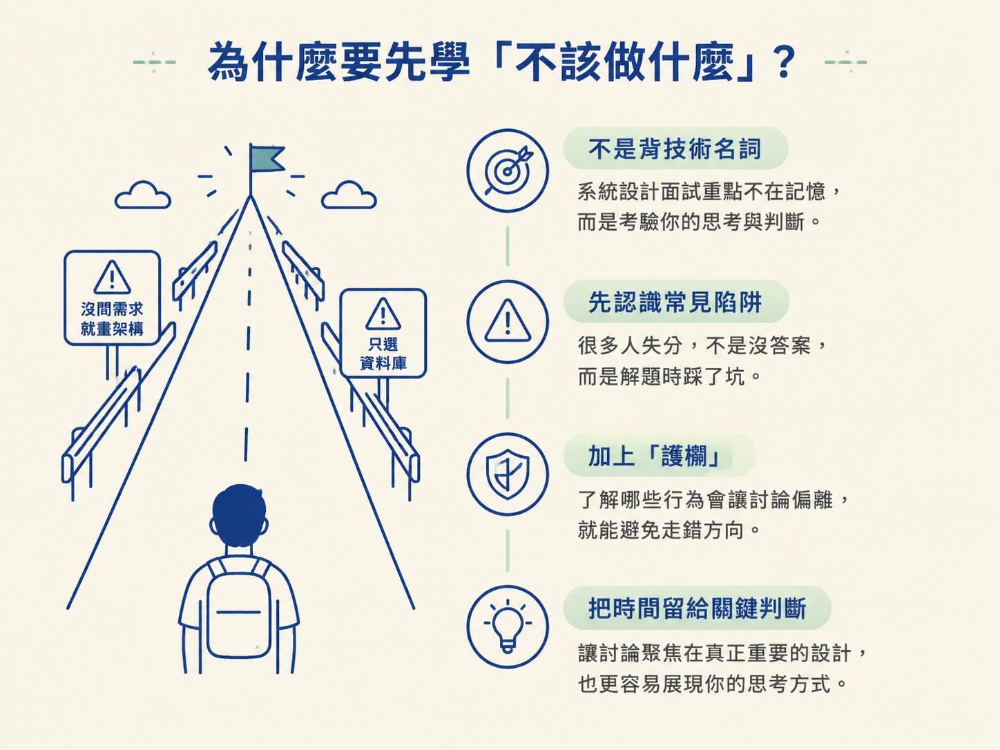
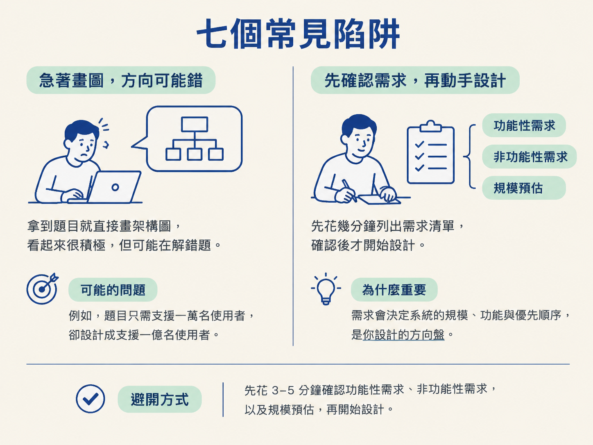
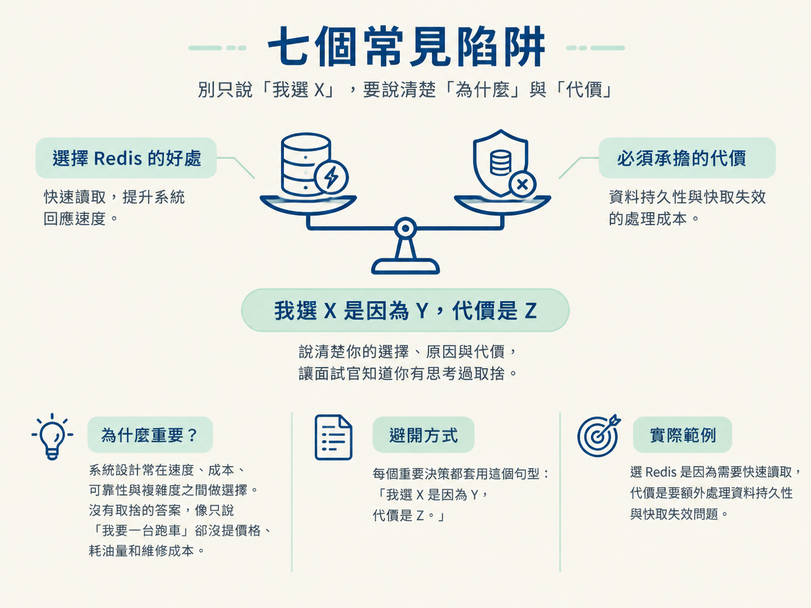
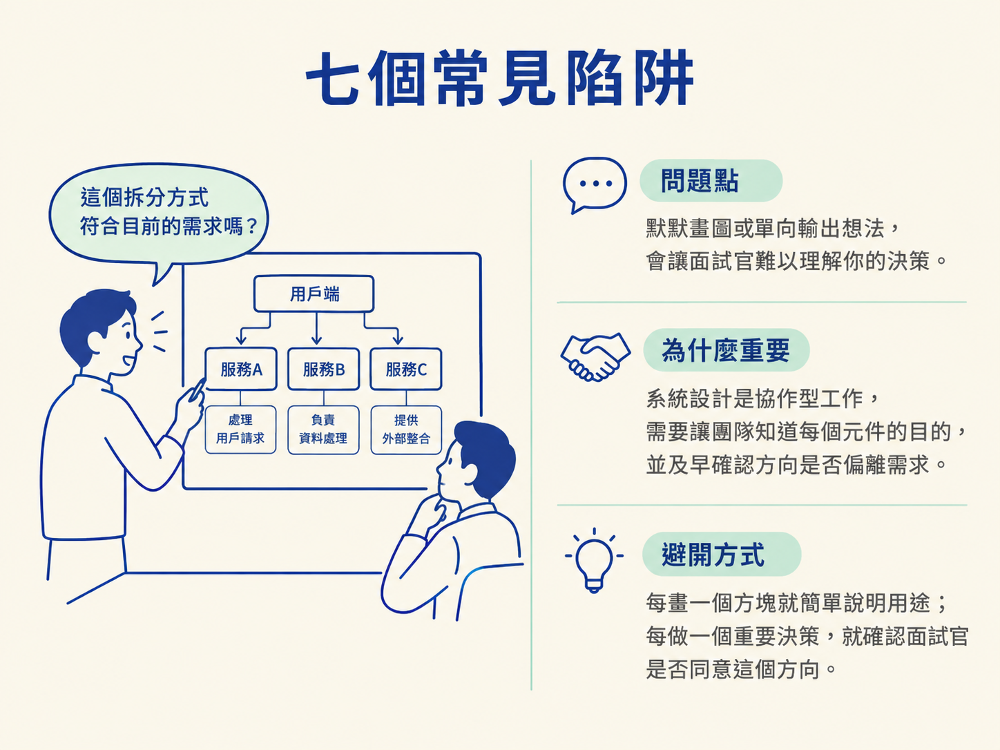
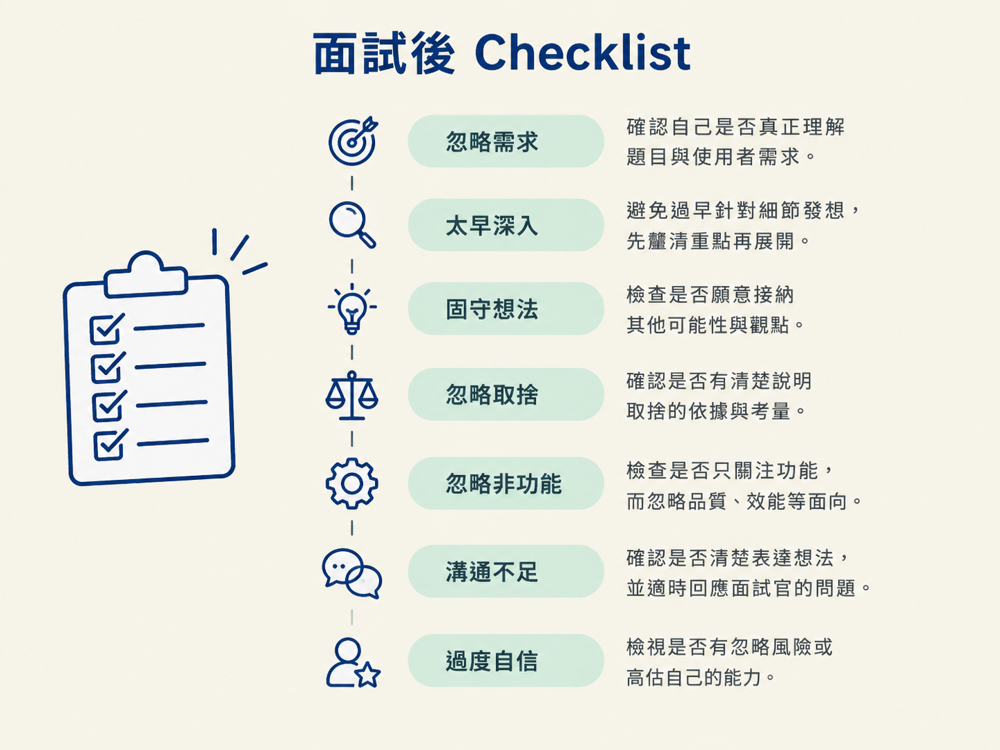

學會辨識並避開系統設計面試中最常見的 7 個陷阱：忽略需求、太早深入細節、固守單一想法、忽略取捨、忽略非功能需求、溝通不足，以及過度自信。
系統設計面試不是比誰背得出最多技術名詞。很多人失分，並不是完全不知道答案，而是在解題過程中踩了坑：需求還沒問清楚就開始畫架構、只顧著選資料庫，卻沒有說明取捨。
所以，這一節像是替你前面學過的解題流程加上護欄。知道哪些行為會讓討論偏離，就能把時間留給真正重要的設計判斷，也更容易讓面試官看見你的思考方式。

拿到題目就直接開始畫圖，看起來像是在積極解題，實際上卻可能是在解錯題。例如，題目只需要支援一萬名使用者，你卻一開始就設計支援一億名使用者的系統，討論很快會被不必要的複雜度帶走。
為什麼重要？需求會決定系統的規模、功能與優先順序。你前面做過的需求釐清，在這裡就是方向盤：沒有先確認目的，後面的架構再漂亮也可能不適用。
避開方式：先花 3–5 分鐘確認功能性需求、非功能性需求，以及規模預估，再開始設計。

一開場就爭論 PostgreSQL 還是 MySQL，就像房子的格局都還沒決定，先挑門把的材質。技術細節不是不重要，而是必須放在正確的時間點。
為什麼重要？先畫高階架構，才能看出服務之間怎麼互動、瓶頸可能在哪裡。若一開始就鑽進單一元件的內部實作，很容易花掉大量時間，卻還沒證明整體設計合理。
避開方式：遵循前面學過的 7 步驟順序，在步驟 5 之前，先不要深入任何組件的內部實現。
面試官暗示你的方案有問題時，如果你只是不斷替原方案辯護，展現出的可能不是自信，而是無法根據新資訊調整。
為什麼重要？系統設計本來就沒有永遠正確的唯一答案。真正重要的是，你能不能理解限制條件改變後，設計也需要跟著改變。
避開方式：把面試官當成一起解題的 teammate。把他的提問視為反饋，先確認問題，再說明你會如何調整方案。
只說「我選 Redis」，面試官還是不知道你為什麼這樣選，也不知道你是否考慮過其他方案。好的回答不只報出工具名稱，還要說清楚選擇背後的交換。
為什麼重要？系統設計常常是在速度、成本、可靠性與複雜度之間做選擇。沒有取捨的答案，像是只說「我要一台跑車」，卻沒提到價格、耗油量和維修成本。
避開方式：每個重要決策都套用這個句型：「我選 X 是因為 Y，代價是 Z。」例如：選 Redis 是因為需要快速讀取，代價是要額外處理資料持久性與快取失效問題。

功能完整，不代表系統能在真實環境中穩定運作。若只說明「使用者可以建立、讀取、更新資料」，卻沒有討論可用性、擴展性與容錯性，設計仍然少了一半。
為什麼重要？平常的系統可能運作正常，但一旦流量增加、某台機器故障，或資料需要恢復，真正的問題才會出現。這也是你前面學過的非功能需求派上用場的地方。
避開方式：在步驟 7 系統性檢查單點故障、資料備份，以及可能的擴展瓶頸。
默默畫圖五分鐘，或一路單向輸出自己的想法，會讓面試官很難知道你為什麼做出這些決定。即使最後架構不錯，過程也可能看起來像在猜答案。
為什麼重要？系統設計是協作型工作。團隊成員需要知道每個元件的目的，也需要有機會及早指出方向是否偏離需求。
避開方式：每畫一個方塊，就簡單解釋它負責什麼；每做一個重要決策，就確認面試官是否同意這個方向，例如：「這個拆分方式符合目前的需求嗎？」

對所有問題都斬釘截鐵，即使自己其實不確定，反而容易讓面試官懷疑你沒有看見風險。系統設計很少有全知全能的答案，誠實說明不確定性通常更有說服力。
為什麼重要？面試官想了解的是你的判斷過程，而不是要求你背出所有細節。能清楚區分「我確定的事」和「我需要再驗證的事」，代表你知道如何面對真實工作的未知。
避開方式：坦承不確定，同時提出目前的推論與依據：「這部分我不確定，但直覺是 X，因為 Y。」
把這 7 個陷阱當成每次模擬面試後的檢查表。不要只回想「我答得好不好」，而要具體檢查自己在哪個環節偏離了流程。

| # | 陷阱 | 自問 |
|---|---|---|
| 1 | 忽略需求 | 我有問功能性、非功能性與規模嗎？ |
| 2 | 太早深入 | 我是在畫完高階圖後才深入的嗎？ |
| 3 | 固守想法 | 面試官給反饋時，我有調整嗎？ |
| 4 | 忽略取捨 | 每個決策我都解釋了原因與代價嗎？ |
| 5 | 忽略非功能 | 我有討論可用性、擴展性與容錯嗎？ |
| 6 | 溝通不足 | 我有邊做邊解釋，並主動詢問面試官嗎？ |
| 7 | 過度自信 | 遇到不確定的地方，我有坦承嗎？ |